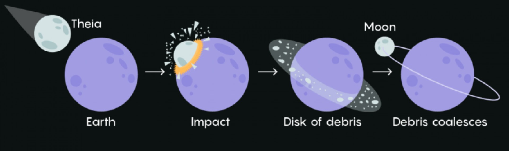

Section 12.2 The Moon
The Moon [Figure 12.2.1.(a)] is Earth’s only natural satellite and the fifth largest moon in the solar system. It is approximately 238,855 miles (384,400 kilometers) away from Earth and has a diameter of 2,159 miles (3,474 kilometers). The Moon is thought to have formed about 4.5 billion years ago, shortly after the formation of the solar system, when a Mars-sized object collided with Earth. The Moon’s surface is covered in craters, mountains, valleys, and vast plains called maria, which were formed by ancient volcanic activity. The Moon has a very thin atmosphere, known as an exosphere, and no active geological processes. The temperature on the Moon can vary greatly, with daytime temperatures reaching 253 degrees Fahrenheit (123 degrees Celsius) and nighttime temperatures dropping to -387 degrees Fahrenheit (-233 degrees Celsius). The Moon has been the subject of scientific study for centuries and has been visited by astronauts from several countries. The first human landing on the Moon was accomplished by NASA’s Apollo 11 mission in 1969, and a total of twelve astronauts have walked on its surface between 1969 and 1972.
Lunar Layers: The outermost layer of the Moon is composed of a layer of rock called the regolith. The regolith is made up of small rock fragments and dust that have been broken down over time by the impact of meteoroids and the bombardment of charged particles from the Sun. Beneath the regolith, the Moon is composed of several distinct layers. The outermost layer is the crust, which is about 30-40 km thick and is composed of a mixture of rocks, including basalt and anorthosite. Beneath the crust is the mantle, which extends to a depth of about 1,000 km. The mantle is composed of denser rocks than the crust and contains a small amount of partially molten material. Finally, at the center of the Moon is a metallic core, which is thought to be about 800 km in diameter. The composition and structure of the Moon’s interior have been studied through a variety of methods, including seismic measurements from Apollo missions, observations of the Moon’s gravity field, and computer simulations. These studies have helped to refine our understanding of the Moon’s formation and evolution, as well as its potential for future scientific exploration and resource utilization.
The Moon does not have a significant atmosphere like Earth’s, but it does have a very thin and tenuous exosphere. The exosphere is a layer of gas that is so sparse that its particles rarely collide with each other. It is made up mostly of particles that have been ejected from the Moon’s surface by impacts from solar wind and micrometeoroids. The exosphere is composed mainly of helium-4, neon, and argon, which are the lightest and most volatile elements found in the solar system. There are also trace amounts of other gases, such as hydrogen, helium-3, and methane. The total mass of the exosphere is only about 10 metric tons, which is less than a billionth of the mass of Earth’s atmosphere. The lack of a significant atmosphere on the Moon means that there is no weather, no wind, and no erosion by air or water. However, the exosphere does have some important effects on the Moon’s surface, such as influencing the behavior of charged particles from the solar wind and affecting the distribution of dust and other materials on the surface. The exosphere also presents some challenges for future human exploration and settlement of the Moon, as it can be difficult to manage and may pose health risks to astronauts.
The lunar landscape is characterized by a vast expanse of barren, rocky terrain. The Moon’s surface is covered in a layer of loose, powdery soil called regolith, which is composed of small rock fragments and dust that have been ground down by the impact of meteoroids over millions of years. The lunar landscape is marked by numerous impact craters, which range in size from small bowl-shaped depressions to vast circular basins hundreds of kilometers across. These craters were formed by the impact of meteoroids and other objects over billions of years, and their shapes and sizes provide important clues about the history and evolution of the Moon. In addition to craters, the lunar landscape also features several other prominent surface features. These include mountains, such as the towering peaks of the Montes Apenninus and the Taurus-Littrow Valley, as well as vast plains, such as the dark and flat lava plains known as mare (singular: "maria"). The Moon’s lack of atmosphere and weather means that its landscape has remained largely unchanged for billions of years, making it a valuable natural laboratory for studying the geology and evolution of planetary bodies. The Moon’s unique features and scientific potential have also made it a target for future exploration and potential resource utilization.
Subsection 12.2.1 The phases of the moon
Moon SongThe phases of the moon [Figure 12.2.1.(b)] refer to the appearance of the illuminated portion of the moon as seen from Earth as it orbits around our planet. The moon goes through a cycle of eight distinct phases:
- New Moon: The moon is not visible from Earth because it is positioned between the sun and Earth.
- Waxing Crescent: A small crescent of the moon is visible, with the illuminated portion increasing each night.
- First Quarter: Half of the moon is visible, with the illuminated portion continuing to increase.
- Waxing Gibbous: More than half, but not yet fully, of the moon is visible, with the illuminated portion still increasing.
- Full Moon: The entire illuminated portion of the moon is visible from Earth.
- Waning Gibbous: More than half, but not yet fully, of the moon is visible, with the illuminated portion decreasing each night.
- Third Quarter: Half of the moon is visible, with the illuminated portion continuing to decrease.
- Waning Crescent: A small crescent of the moon is visible, with the illuminated portion decreasing each night until the cycle begins again with the new moon.
The rotation period of the Moon is approximately 27.3 days to complete one rotation on its axis. This time is also known as sidereal month. A sidereal month is the time it takes for the Moon to complete one orbit around the Earth as measured against the fixed background of stars. This is slightly shorter than the time it takes for the Moon to return to the same phase (such as full moon to full moon) as observed from Earth, which is known as the synodic month. This is the same amount of time that the Moon takes to orbit around the Earth as seen from the moon. As a result, the same side of the Moon always faces the Earth, a phenomenon known as "tidal locking." While the moon orbits a complete circle around the earth, the earth itself rotates around the sun. As a result, it seems to us that moon is taking about 29.53 days to orbit around the earth. This 29.53 days is called lunar month. A lunar month is the time it takes for the Moon to complete one cycle of phases, from New Moon to New Moon. It’s worth noting that this period of 29.53 days is different from the Moon’s orbital period around the Earth, which is approximately 27.3 days. The difference between these two periods is due to the fact that the Earth is also orbiting around the Sun, so the Moon has to travel slightly farther to complete a full cycle of phases as seen from Earth Moon phase animation 2 .
Subsection 12.2.2 Eclipse
An eclipse occurs when an astronomical object is temporarily obscured, either partially or completely, by another object [The Lunar and Solar Eclipses 3 ]. The two main types of eclipses are solar eclipses and lunar eclipses. A solar eclipse occurs when the Moon passes between the Sun and the Earth, blocking the Sun’s light and creating a shadow on the Earth. There are three types of solar eclipses: total, partial, and annular. During a total solar eclipse, the Moon completely covers the Sun, leaving only its corona visible. During a partial solar eclipse, only a portion of the Sun is covered by the Moon. During an annular solar eclipse, the Moon is too far away from the Earth to completely cover the Sun, creating a "ring of fire" effect. A lunar eclipse occurs when the Earth passes between the Sun and the Moon, casting a shadow on the Moon. There are two types of lunar eclipses: total and partial. During a total lunar eclipse, the Moon is completely covered by the Earth’s shadow, creating a reddish hue. During a partial lunar eclipse, only a portion of the Moon is covered by the Earth’s shadow. Eclipses are relatively rare events that require specific alignment of the Sun, Moon, and Earth. While there are several eclipses each year, they are typically only visible from specific regions of the Earth and require clear skies and proper viewing conditions to be seen.
During a New Moon, the Moon is located between the Earth and the Sun, and the side of the Moon that faces Earth is not illuminated by the Sun, making it invisible from Earth. When the Moon passes directly in front of the Sun during a New Moon, a solar eclipse can occur, temporarily blocking out the Sun’s light and casting a shadow on the Earth. On the other hand, a full moon occurs when the Earth is located between the Sun and the Moon, with the illuminated side of the Moon facing Earth. It’s worth noting that a lunar eclipse can only occur during a Full Moon phase, when the Earth passes between the Sun and the Moon, casting a shadow on the Moon. During a lunar eclipse, the Moon may appear reddish in color due to the Earth’s atmosphere refracting sunlight onto the Moon’s surface.
Subsection 12.2.3 Origin of the Moon

The most widely accepted theory is that moon was formed as a result of a giant impact Figure 12.2.3 between Earth and a Mars-sized object called Theia, early in the history of the solar system, about 4.5 billion years ago. According to this theory, the impact would have melted both the Earth and Theia, and a large amount of debris would have been ejected into space. This debris eventually coalesced to form the Moon. The evidence for this theory comes from the fact that the Moon’s composition is very similar to that of Earth’s mantle, suggesting that it was formed from material that originated from Earth. Another piece of evidence for the giant impact theory is that the Moon has a lower density than Earth, which suggests that it is composed of lighter materials. The impact would have caused a lot of the heavier materials to sink into the Earth, leaving behind a lighter mixture of materials that eventually formed the Moon. While the giant impact theory is currently the most widely accepted explanation for the origin of the Moon, there are other competing theories that propose different mechanisms for the Moon’s formation. These include ideas such as the capture of a passing object by Earth’s gravity, or the fission of a rapidly spinning Earth. However, these theories are generally considered to be less likely than the giant impact theory.
solarsystem.nasa.gov/moons/earths-moon/lunar-phases-and-eclipses/ccnmtl.github.io/astro-simulations/lunar-phase-simulator/www.earthspacelab.com/app/eclipse/